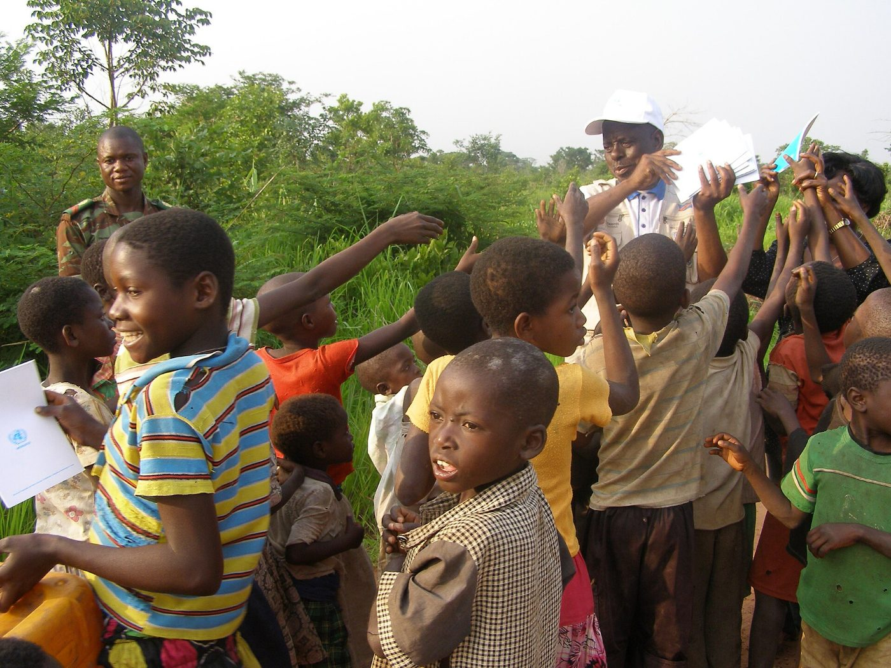
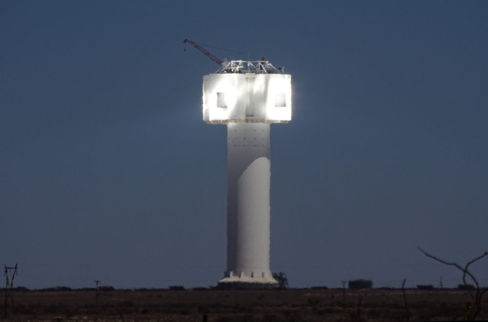

Sécurité, environnement, communautés : les chiffres d'abord.
Chaque année nous publions les mêmes indicateurs, vérifiés par un tiers indépendant, et nous rendons compte de ce qui n'a pas marché autant que de ce qui a marché.
Indicateurs 2025
Rapport aligné sur GRI, TCFD et SASB (métaux et mines). Déclaration ITIE-RDC. Diligence raisonnable selon le Guide OCDE. Audit Copper Mark en cours.
Chiffres illustratifs, à remplacer par les données de la société.
Environnement
Eau
71 % de l'eau de procédé est recyclée. La qualité de la rivière Kando est mesurée chaque mois en amont et en aval, et les résultats sont affichés dans les bureaux communautaires.
Résidus
Parc à résidus conçu selon la norme mondiale de gestion des résidus (GISTM), inspecté chaque trimestre par un ingénieur indépendant.
Climat
Émissions de scopes 1 et 2 de 210 kt CO₂e en 2025, en baisse de 9 %. Centrale solaire de 20 MWc, objectif 60 % d'électricité renouvelable en 2028.
Réhabilitation
Réhabilitation progressive des zones exploitées, pépinière de 40 000 plants d'espèces locales, provision financière pour la fermeture révisée chaque année.
Programmes communautaires
Le cahier des charges sociales, prévu par le Code minier, est établi avec les comités locaux de développement de Kando et de Kanzenze. Budget 2025 : 4,2 M USD.


Éducation
Trois écoles réhabilitées à Kando et Kanzenze, 1 200 élèves, cantine scolaire et bourses pour 40 étudiants en filières techniques à Lubumbashi.
Santé
Centre de santé de Kando ouvert aux communautés, maternité, campagnes contre le paludisme et clinique mobile mensuelle.
Eau
Douze forages équipés de pompes solaires dans les villages riverains, entretien assuré par des comités d'usagers formés.
Agriculture et revenus
Coopératives maraîchères fournissant la cantine du site, 340 familles, appui technique et accès au crédit.
Consultation et consentement
Aucun projet n'est lancé sans consultation préalable des communautés concernées. Les réunions se tiennent en français, en swahili et en lunda, et leurs comptes rendus sont affichés dans les bureaux communautaires. Aucune réinstallation n'a été nécessaire à ce jour.
Origine des minerais
Tout le cuivre et le cobalt que nous vendons provient de la mine de Kando. Nous n'achetons aucun minerai artisanal. Chaque lot est tracé de la fosse au conteneur et notre politique de diligence raisonnable suit le Guide OCDE.
Mécanisme de plaintes et de signalements
Toute personne, employé, sous-traitant, riverain, peut déposer une plainte gratuitement, y compris de façon anonyme. Chaque plainte reçoit un numéro, un accusé de réception sous 48 heures et une réponse dans les 30 jours.
1 · Réception
Numéro vert, WhatsApp, bureaux communautaires de Kando et Kanzenze, ou ce formulaire.
2 · Enregistrement
Numéro de référence remis au plaignant, sous 48 heures.
3 · Examen
Enquête par l'équipe communautaire, avec visite si nécessaire, sous 30 jours.
4 · Réponse et recours
Réponse écrite. En cas de désaccord, médiation par le comité local de développement.
Numéro vert plaintes et signalements
0 800 00 12 12 · WhatsApp +243 97 000 00 12
Gratuit depuis tous les réseaux, du lundi au samedi de 7 h à 19 h. WhatsApp 24 h/24.
Rapports et politiques
- Rapport de durabilité 2025 (vérifié)PDF · 9,8 Mo · 2026-05-15Télécharger
- Déclaration ITIE 2024PDF · 1,2 Mo · 2025-12-10Télécharger
- Plan de gestion environnementale et sociale (résumé)PDF · 3,3 Mo · 2025-09-01Télécharger
- Politique de diligence raisonnable sur les mineraisPDF · 0,4 Mo · 2025-06-30Télécharger
- Code de conduite et politique anticorruptionPDF · 0,5 Mo · 2024-11-12Télécharger